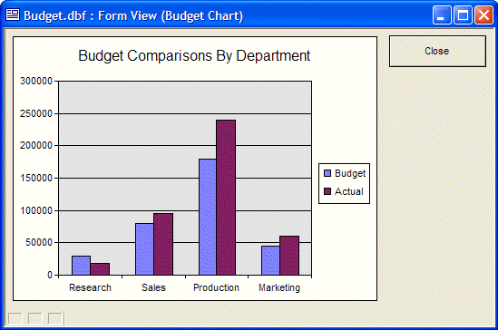
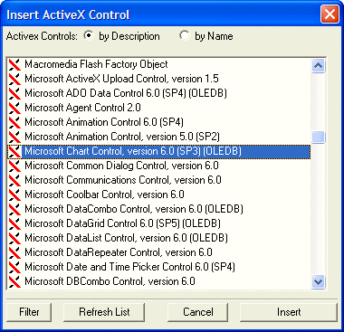
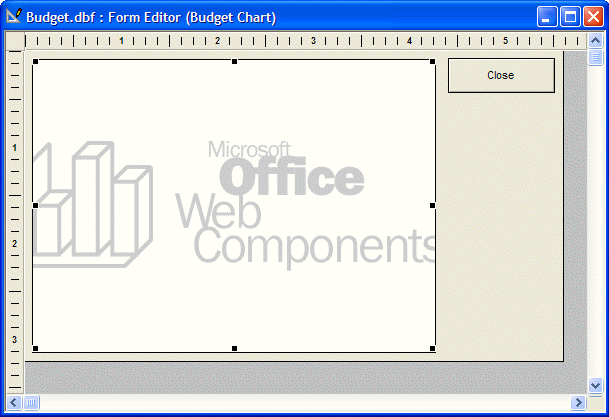
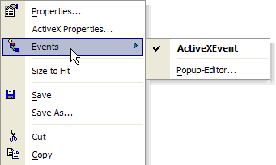
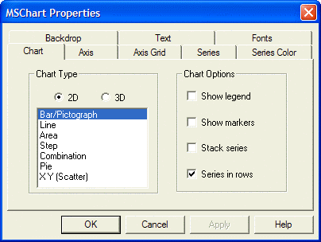
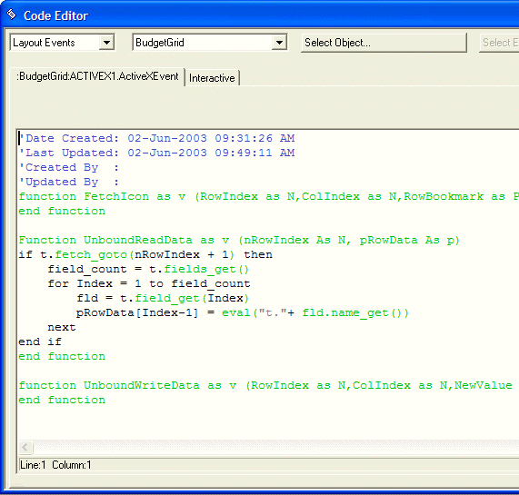
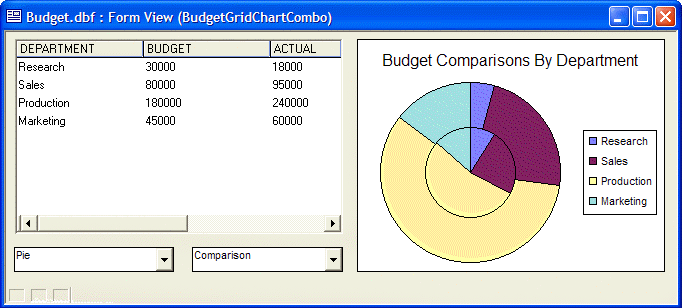

Enhanced ActiveX Support
Alpha Five provides support for the use of ActiveX controls on forms and Xdialogs. Third party ActiveX controls, as illustrated by the next picture, can add exciting new features to Alpha Five applications.

A Graph Control from Microsoft Office Used on an Alpha Five Form
Placing an ActiveX Control on a Form
The process of using an ActiveX control starts with selecting the ActiveX tool from the toolbar and sketching the rectangle that the control will occupy. A list asks you to select from the available controls on your PC.

 Note : It is important
to remember that ActiveX controls are not included in the distribution
of an Alpha Five application.
Note : It is important
to remember that ActiveX controls are not included in the distribution
of an Alpha Five application.
The following image shows an ActiveX control sketched onto the form.

ActiveX controls provide their own events and Properties dialog boxes. You can see them by right clicking on the control.

The following is one properties page from the Microsoft Chart control. Some ActiveX controls will expose few or no properties.

The events for a control are placed into a single script, as illustrated below. In this case the application developer inserted additional Xbasic code into the UnboundReadData event that reads data from a table and puts it into an array variable (which the ActiveX control will use as an input).

Xdialog Support
Xdialog forms can also include ActiveX controls by using the {ACTIVEX} command. The following picture shows an Xdialog dialog box with two different ActiveX controls.

See Also
Support for Active Data Objects (ADO)
Supported By
Alpha Five Version 6 and Above